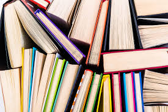

به قول پاتریک او شانسی
مطالعه کتاب گذشته را تغییر می دهد
البته این حرف زمانی صحیح است که شما دانش و بینش حاصل از کتاب ها را ملکه ذهن تان کرده باشید
حال که ارزش کتاب را فهمیدیم بهتر که آن را در خاطر خود نگه داریم
زیاد کتاب خواندن منافع بی شماری دارد اما از دید من شاید مهمترین فایده اش این باشد که خواندن یک کتاب خوب میتواند راهی جدید برای تفسیر تجربیات گذشته در اختیار شما قرار دهد. هر گاه مطلب جدیدی یاد میگیرید مغزتان مثل نرم افزار همه داده های قدیمی را بر مبنای اطلاعات جدید به روز رسانی میکند شما میتوانید از لحظات پیشین زندگی خود درسهای جدیدی بگیرید. دانش زمانی رشد میکند که نهادینه شده باشد به بیان دیگر ،مهم خواندن کتابهای بیشتر نیست ،بهره برداری بیشتر از آن هاست. البته مطالعه فقط برای کسب دانش نیست برای سرگرمی و لذت هم هست و اتفاقاً روش خوبی برای پر کردن اوقات فراغت است ولی موضوع این مقاله مطالعه با هدف یادگیری است. با در نظر گرفتن این موضوع میخواهم برخی از راهبردهای خوب مطالعه مفهومی را معرفی کنم
حال می خواهیم اینان را بررسی کنیم
تشخیص این که چیزی ارزش خواندن دارد یا نه زمان زیادی نمیبرد نگارش ماهرانه و محتوای پرمغز از ظاهرش پیداست بر این اساس اکثر مردم باید بیشتر از قبل لای کتابهای جدید را باز کنند. این بدان معنا نیست که صفحه به صفحه هر کتاب را بخوانید با نگاهی گذرا به فهرست مطالب و عناوین اصلی و فرعی قسمتهای جالب را انتخاب کنید و چند صفحه از آن را بخوانید. با نگاهی اجمالی به بخشهای متمایز کتاب در عرض ده دقیقه میتوان عیار آن کتاب را سنجید. سپس به مرحله ای حیاتی میرسیم کتابها را بی هیچ عذاب وجدان و خیلی سریع کنار بگذارید زندگی آن قدر کوتاه است که نباید صرف خواندن کتابهای متوسط شود. زمان طلا است. چیزهای جالب خواندنی زیادند فکر میکنم پاتریک کالیسون بنیانگذار استرایپ وقتی این جمله را گفت به خوبی لمس کرد که زندگی آن قدر کوتاه است که نباید اکنون را صرف خواندن بهترین کتابی کنید که سراغ دارید.

یکی از راه های بهبود درک مطلب انتخاب کتاب هایی است که در همان مقطع زمانی خواندنشان بتوانید محتوای آن ها را به کار ببریدبه کار گیری آموخته ای کتاب ها راهی عالی برای تثبیت مفاهیم آن ها در ذهن است ،تمرین شکل بسیار موثر یادگیری است انتخاب کتابی که بتوانید در لحظه حال از آن استفاده کنید انگیزه ای مضاعف برای توجه بیشتر و به یاد سپردن مفاهیم آن فراهم میکند خصوصاً وقتی در وضعیتی بحرانی قرار میگیرید مثلاً اگر کسب و کار جدیدی راه انداخته باشید برای درک مفاهیم کتابهای فروش انگیزه زیادی دارید به همین ترتیب کسی که در حوزه زیست شناسی فعالیت میکند کتاب منشأ گونه ها را بهتر از کسی میفهمد که آن را از روی کنجکاوی میخواند زیرا مفاهیم کتاب با کارهای روزانه او مستقیماً در ارتباط است. البته همه کتابها کاربردهای عملی ندارند که بتوانید بلافاصله آنها را در زندگی خود به کار بگیرید از بسیاری کتابها میتوانید درس بصیرت بگیرید ولی شخصاً پی برده ام کتابهایی بیشتر در ذهنم باقی مانده اند که با زندگی روزمره ام بیشتر پیوند داشته اند.

از چیزهایی که میخوانید یادداشت تهیه کنید این کار را به هر نحوی که دوست دارید انجام دهید. لازم نیست از روشهای پیچیده استفاده کنید این کار را صرفاً طوری انجام دهید که ست از فرازهای مهم کتاب متمایز شود. من این کار را بر حسب نوع محتوا به روشهای مختلفی انجام میدهم. در کیندل قسمتهای مهم را هایلایت میکنم در کتابهای صوتی نقل قولهای جذاب را تایپ میکنم در کتابهای چاپی گوشه صفحات مهم را تا میزنم و حاشیه نویسی می نکته مهم طوری یادداشت کنید که بعداً بتوانید آن را جست وجو کنید. لزومی ندارد همه بار کتاب را بر عهده حافظه خود بگذارید من یادداشتهایم را در اورنوت ۲۳ مینویسم این برنامه را به چند دلیل به بقیه ترجیح میدهم

کتاب را میتوان نوعی درخت دانست؛ مفاهیم اصلی تنه آن را شکل میدهند و جزئیات شاخه ها را میرویانند با برقراری پیوند بین شاخههای این درختها میتوان به درک و بینش عمیق تری رسید. مثال: - هنگام مطالعه مغز رازگو از متخصص علوم اعصاب راماچاندران ، پی بردم که یکی از نکات کلیدی آن به نکته دیگری از کار اجتماعی اثر برنه براون مربوط است. - در یکی از یادداشتهایم درباره کتاب هنر ظریف رهایی از دغدغه ها * اشاره کردم که ایده کشتن خود با مقاله هویت خود را کوچک نگه دار از پل گراهام هم پوشانی دارد. موضوع مهارتهای استادی از جورج لئونارد، اگرچه درباره بهبود کارایی است در لفافه رابطه بین ژنتیک و عملکرد را نیز بیان کرده است. من فهم و برداشتم از هر کتاب را به یادداشتهایم درباره آن کتاب اضافه میکنم برقراری چنین پیوندهایی کمک میکند با اتصال اطلاعات جدید به اطلاعات قدیمی، میزان ماندگاری اطلاعات در ذهن افزایش یابد همان طور که چارلی مونگر بیان کرده است: «اگر به دهید، به تدریج به خرد خود افزوده اید.» وقتی چیزی میخوانید که یادآور موضوعی است یا در ذهن شما جرقه ای ایجاد میکند اجازه ندهید از ذهنتان بپرد بلافاصله درباره آن و رابطه اش با مفاهیم قبلی بنویسید

از تکنیک فایمن استفاده کنید
برای یادگیری تکنیک فایمن کلیک کنیدموضوع را از زوایای مخلتف بررسی کنید کتاب خواندن کار پرزحمتی است و بیشتر اوقات مردم فقط یک کتاب یا مقاله را مبنایی برای کل یک نظام اعتقادی قرار میدهند شایع تر از آن مبنا قرار دادن تجربه شخصی است که غلبه بر آن هم دشوارتر است همچنان که مورگان ها وسل اشاره میکند شما فکر میکنید تجربیات شخصیتان هشتاد درصد اتفاقات دنیاست در حالی که شاید آنها فقط 1........./. درصد اتفاقات دنیا باشند باورهای ما خواه ناخواه از تجریبات شخصی ما متأثرند.» یک راهکار برای حل این مشکل مطالعه زیاد است به یک موضوع از زوایای مختلف و از دریچه نگاه نویسندههای مختلف بنگرید سعی کنید از حیطه تجربیات شخصی خود فراتر بروید.

به علاوه بازخوانی کتابهای خوب مفید است چون در گذر زمان با مشکلات متفاوتی روبه رو می شوید. مطمئناً با دوباره خواندن یک کتاب چیزهایی در آن مییابید که در نوبتهای قبل به دلیل شرایط آن ،زمان در دایره توجه شما نبوده اند ولی با گذشت زمان و تجربه شرایط جدید آن بخشهای کتاب اکنون برای شما ملموس شدهاند بسیار طبیعی است که برداشت شما از جملات مختلف در طول زمان تغییر کند. شما هرگز کتابی را دو بار به یک شکل نمیخوانید حتی اگر از هر مطالعه چیز جدیدی دستگیرتان نشد باز هم ارزش دارد کتابهای خوب را چند بار بخوانید چون مفاهیم ارزشمند با تکرار زیاد در ذهن حک میشوند. تکرار مفاهیم مهم باعث تثبیت می شود

برگرفته از کتاب قدرت شروع ناقص جیمز کلییر نشر میلکان
آدرس نشر میلکانکتابدار عزیز لطفا به فیپا کتاب دقت کنید
بابت اینکه اولین پروژه من را خواندید این فایل را تقدیم به شما می کنم و توصیه می کنم که آن را با چشمان بسته گوش دهید